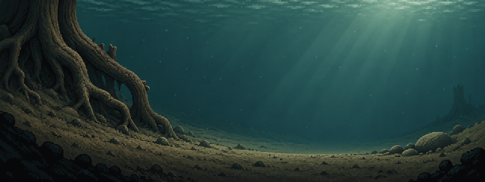
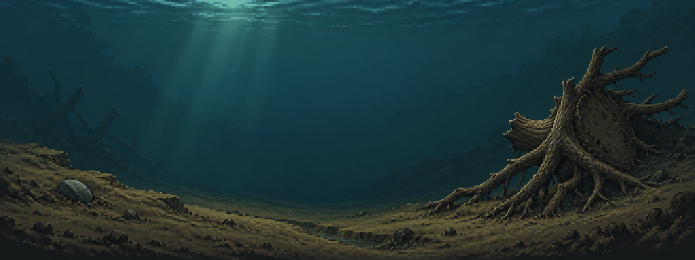

NATURAL POND SERIES / M02 / ROUND 01
老根幽潭 · 岸根与阴影水域
本轮只比较裸露死木根、泥岸、石块、水色与光照。保持中央水域连续，避免根系织成挡住视线的枝网。

两套完整构图



2048×768 美术概念图，不是游戏截图；目前没有植物、动物或真实交互。先选择构图，再进入植物群落，不自动沿用 M01 的 B 选择。
本轮只比较裸露死木根、泥岸、石块、水色与光照。保持中央水域连续，避免根系织成挡住视线的枝网。


2048×768 美术概念图，不是游戏截图；目前没有植物、动物或真实交互。先选择构图，再进入植物群落，不自动沿用 M01 的 B 选择。